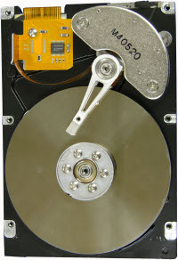

Hard drives (also called local drives) are used for long-term storage of programs and data. In Windows, drives are denoted by letters followed by colons. The first hard drive is denoted by the letter C:. If there are any further hard drives (or logical partitions of the same physical drive), they would be denoted by the letters D:, E:, and so on.
